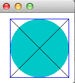

1.
Draw a square with side of 100 at (20,10). Use the predefined color, blue. Fill the ellipse that is bounded by the square. Use a custom color to fill the ellipse where the red value is 0, green value is 200, and blue value is 200. Draw the diagonals of the square in black. You do not need to use constants.
Draw the square first, then the ellipse, then the diagonal starting at the upper left-hand corner. Finally draw the other diagonal stating at the upper right-hand corner. Be sure to use this order.
Your drawing should look like this

2.
You are provided with a BankAccount class. The bank is running a promotional and will give anyone who opens an account $100. A person can open an account with no money and have a starting balance of $100;
The problem is that the constructor and methods are not doing their job correctly. The class is also missing some Javadoc. The balance should never be negative, but the methods do not check values of the parameters. You are to add some of the necessary checks and add missing Javadoc. We will assume the user never tries to withdraw more money than is in the account.
Do these things:
3.
Ask the user to enter two doubles and divide the smaller by the larger.
Use these exact prompts:
Now print the quotient of the smaller divided by the larger.
You can assume that the larger number is never 0.
Codecheck link: http://go.code-check.org/codecheck/files/14092619238c5s9v8k65b2zs5o2enhscqw
4.
A drinking glass has a a shape composed of 2 cylinders one on top of the other. The base cylinder has a height of h and a radius of 3 times the height. The top cylinder is 10 times the height of the base and the radius is 1/2 the radius of the base cylinder. Both cylinders are hollow. Create a class that models this shape.
Constructor:
Methods
5.
The program below has a faulty implementation of the method printChange.
Trace the following method call. Record results in the given file (5_trace.rtf located in the code folder)
ChangeGiver change = new ChangeGiver();
change.printChange(40);
Fill in the columns in the table in 5_trace.rtf. Do not make your own file. I will only grade 5_trace.rtf. I have entered the first value for you.
Show how each value is set and changed. Enter the new values in a new row for each statement so I can see the exact order of changes.
Since the method is not correct, you should not expect it to work right. In your trace, show what happens, not what should happen.
public class ChangeGiver
{
final int QUARTER_VALUE = 25;
final int DIME_VALUE = 10;
final int NICKEL_VALUE = 5;
/**
* Prints the smallest number of quarters, dimes and nickels
* needed to give the specified amount of change
* @param changeToGive the amount of change to give
*/
public void printChange(int changeToGive)
{
int quartersToGive = changeToGive / QUARTER_VALUE; //line 1
int remainder = changeToGive % quartersToGive; //line 2
int dimesToGive = changeToGive / DIME_VALUE; //line 3
remainder = changeToGive - dimesToGive; //line 4
int nickelsToGive = changeToGive / NICKEL_VALUE; //line 5
System.out.println("Quarters: " + quartersToGive);
System.out.println("Dimes: " + dimesToGive);
System.out.println("Nickels: " + nickelsToGive);
}
}
6.
Complete the method superlative() in the Adjective Class. Adjective has a constructor (provided for you) that takes an English adjective as a String . Methods to get and set the adjective are also provided. Adjectives have a comparative and superlative form. You will complete the method to return the superlative form of the adjective. Follow the rules in the order below to find the superlative of an adjective (This is not strictly correct but we will pretend it is. Just follow the rules)
Here is a table of irregular adjectives
| adjective | superlative |
|---|---|
| good | best |
| bad | worst |
Use if / else if / else. Do not use if / if / if